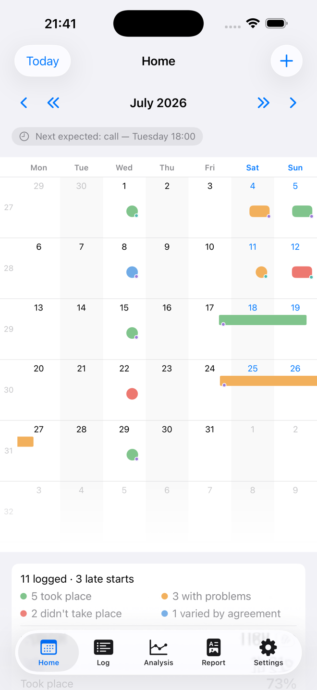
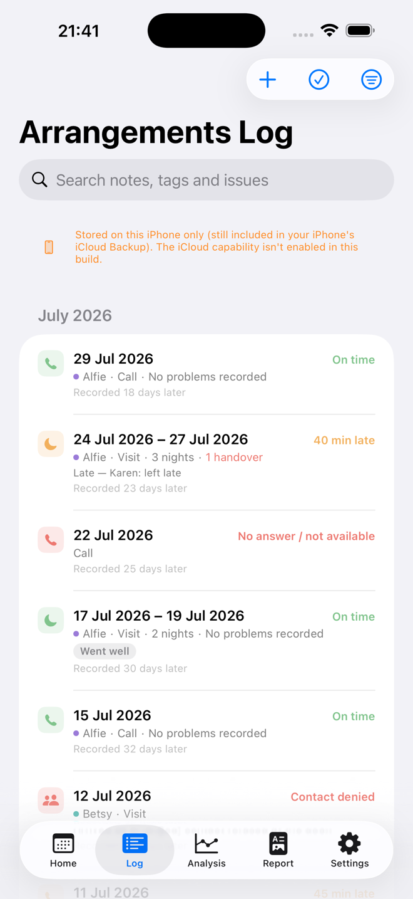
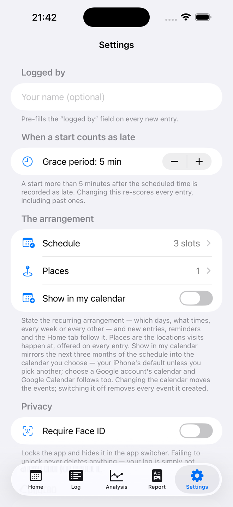
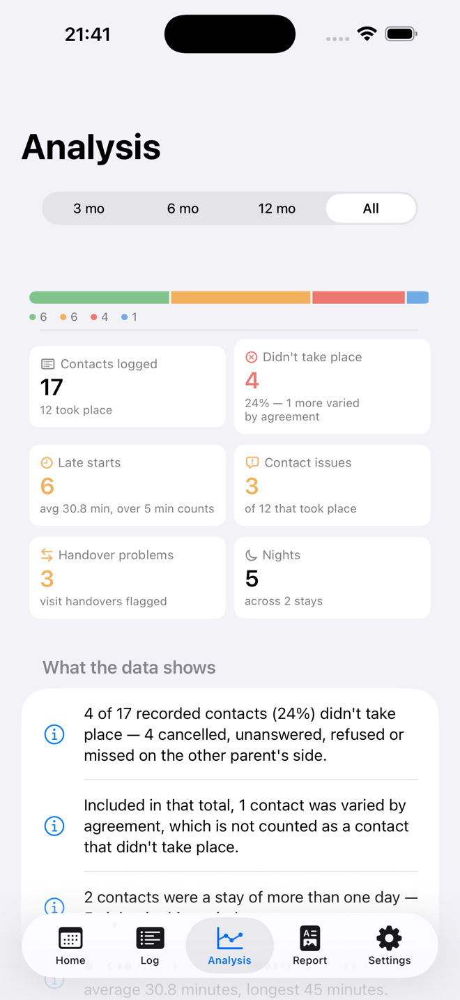
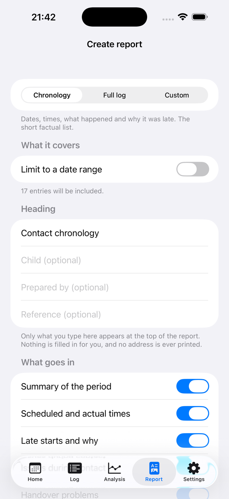
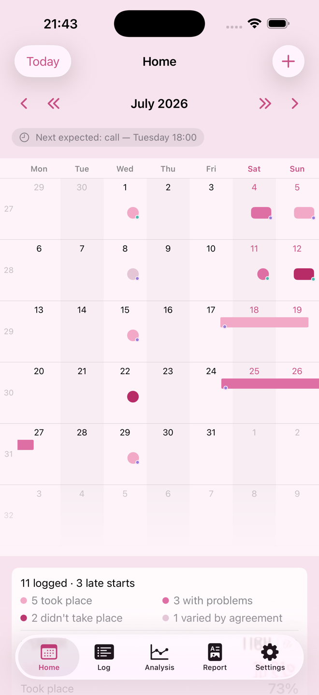
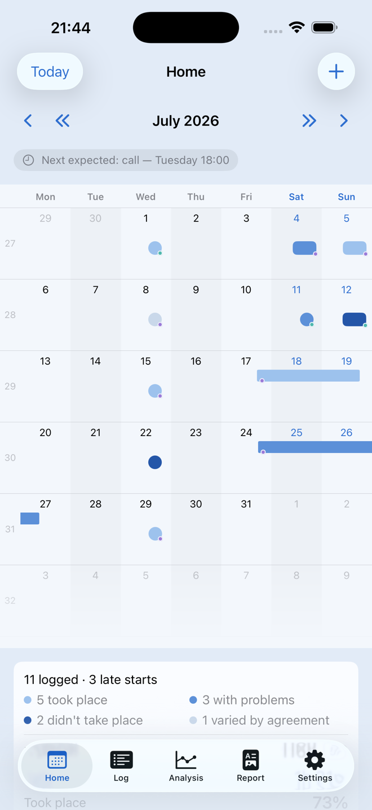
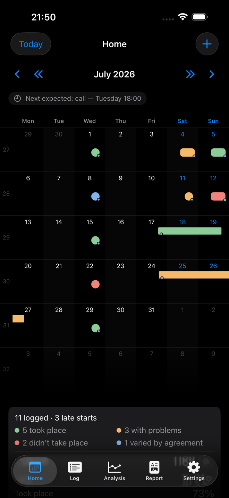
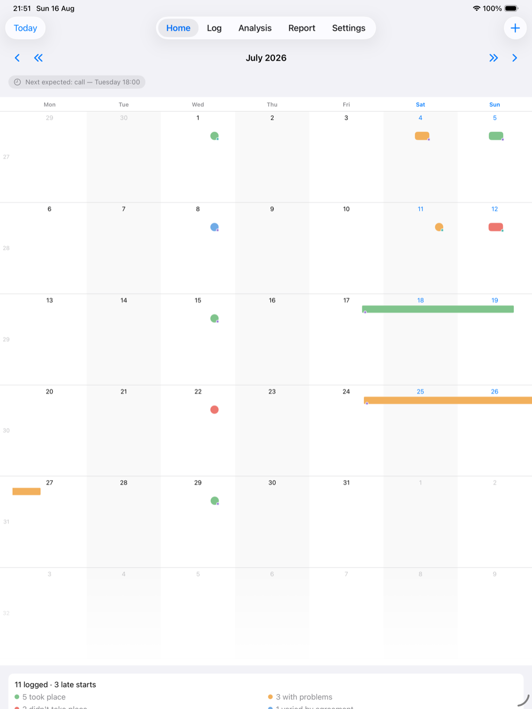

A calm, factual record of contact with your child.
Arrangements Log keeps your own dated record of the calls and visits in a child contact arrangement — whether each one happened, how the actual times compared with the scheduled ones, and what occurred. It stays on your iPhone and in your own private iCloud.
iPhone and iPad, iOS 17 or later.

- No accounts, no servers
- No analytics, no third-party code
- “Data Not Collected” on the App Store
- Made in the UK by Neutrade Ltd
What it is
Built for one person keeping their own careful notes.
There is no account to create, nobody else to invite, and nothing you write is ever shared. The app is deliberately neutral in tone, because a calm, accurate, contemporaneous record is far more useful than a critical one.
The record
Every contact, written down while it is fresh.
Each entry captures what actually happened, in the detail that matters later — not just that something was “missed”.
- Calls and visits, and whether each one took place, was cancelled, or went unanswered
- Scheduled times against actual times, so lateness is measured rather than remembered
- Who a late start is attributed to, and the reason given — including “no explanation given”, which is itself a fact
- Issues during contact, and problems at handover
- Multi-day stays, with nights counted properly
- Which child each contact was for — each one wears their own colour on the calendar
- Where a visit happened, from your own saved places
- Your own tags, so the patterns you care about are easy to find again

The arrangement
State the schedule once, and the app works from it.
Set out the regular pattern — which days, what times, weekly or alternating — and the calendar shows what is planned as well as what happened.
- A planned mark disappears the moment you log the real thing
- Fallen behind? Catch up lists what was scheduled but never logged — nothing is ever filled in for you
- One-off changes and forward overrides, for when the arrangement shifts
- Optional reminders to log the evening’s contact while you remember it
- Optionally mirror the schedule into your own calendar — Google included — kept up to date automatically

What it tells you
Plain English, not just charts.
The Analysis tab reads the log back to you in sentences you could put in front of anyone:
Alongside that: lateness over time, contacts per month, how often each issue and each tag appears, and a month-by-month summary — filtered by any period, type or tag.

Taking it out
A dated PDF of exactly what you filtered.
Narrow the log to what you need — a date range, calls only, late starts, anything you have tagged — and turn precisely that into a document.
- Two ready-made shapes: a short chronology of dates, times and what happened, or the full log including your notes and your child’s own words
- Every section is a switch, so you decide what goes in
- Prints on A4 or US Letter, and shows the page count before you create it
- If you printed a filtered selection, the first page says so. Nothing is trimmed to fit
- A closing note explains how the times were recorded, what counts as a late start, and which entries were amended after they were written

Private by design
Nobody else can read it. Not even us.
This is the most sensitive kind of record a person keeps. The app is built so that there is nowhere for it to leak to — there is no server to hold it and no account to sign into.
On your device, and your iCloud
Your entries live on your iPhone and in your own private iCloud, where only your Apple ID can read them. They survive reinstalling the app or moving to a new phone.
No servers, no accounts, no analytics
The app has no networking of its own and contains no third-party code of any kind. There is no sign-up, no tracking and nothing to opt out of.
It never touches your other data
No access to your Contacts, your location or your camera. Calendar mirroring is entirely optional and off unless you turn it on.
Your record is yours to take
Automatic rolling backups are kept inside the app, and you can export the whole thing as JSON or CSV whenever you want — including after cancelling.
If the app ever crashes, Apple may send us a crash report — but only if you have Apple’s own “Share With App Developers” setting on. It says why the app stopped and contains nothing you have written. Read the full privacy policy.
On screen
Three themes, light and dark.
You may be opening this app on a difficult evening. It should not feel clinical, and it should not look like anything in particular over your shoulder.



And a full-screen calendar on iPad.
The same record, the same private iCloud. Log on your iPhone in the evening and read the month back on a bigger screen when you need to see the shape of it.

Price
Try it free for 14 days.
No charge unless you continue, and nothing to cancel if you don’t. If you would rather not have a subscription at all, you can buy the app outright.
Monthly
£4.99 per month
14 days free, then £4.99/month
Renews automatically until cancelled. Cancel any time in your Apple Account settings.
Or buy it once
£49.99 one payment
No renewal, nothing to cancel
A single payment. It stays yours on any iPhone or iPad signed into the same Apple Account.
- Whichever you choose, your record is yours to export as JSON or CSV at any time
- Your record is never deleted — not if you cancel, not if the subscription lapses
- One purchase covers your iPhone and your iPad
A record-keeping tool, not legal advice
Whether anything you record is useful or admissible in legal proceedings is a matter for your solicitor and the court. The app makes no promises about either — it simply helps you keep an accurate, dated account of what happened.
Questions
Before you start.
Where is my data kept?
Can the other parent see any of this?
How do I get my data out?
What happens if I cancel my subscription?
Will it work if I move to a new iPhone?
Can I record more than one child?
Do you get crash reports?
Something else? Read the support page or email md@neutrade.co.uk.
Start the record today, not the week you need it.
The value of a contact log is that it was written at the time. Fourteen days free is enough to find out whether keeping one helps.